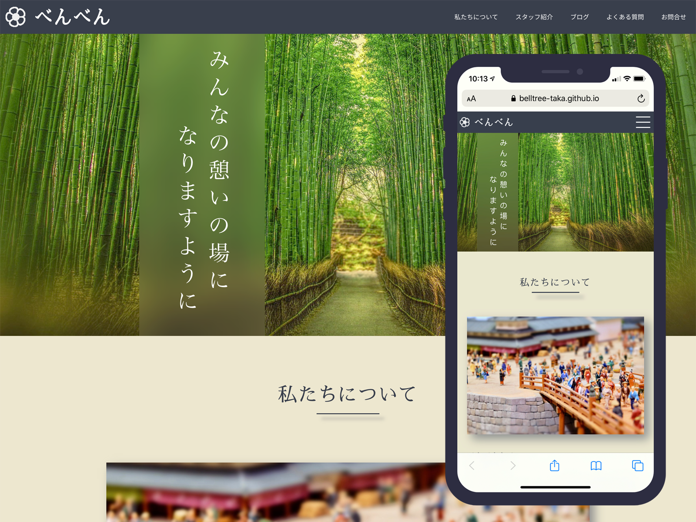

WORKS
以下のようなWebサイト作成の経験があります

架空サイト「べんべん」
HTML/CSS/jQuery/Adobe Phtoshop
Adobe XD/デザイン
Adobe XD/デザイン
こちらは、海外の日本人コミュニティを題材にした「架空ジョークサイト」です。主にAdobe XDを用いて、ワイヤーフレームとプロトタイプの開発をし、それを基にコーディングを行いました。

サイト模写「デンタルクリニック」
HTML/CSS
はにわまんさんが運営されるHPcodeで紹介されているDental Clinicのサイト模写をしました。全ページとレスポンシブデザインのコーディングも行いました。GIF画像が私のコーディングで作成したもので、リンク先が模写をさせて頂いたサイトになります。

WebSite Name
HTML/CSS
Explain how I created this website. List the techniques that I used to build this website.